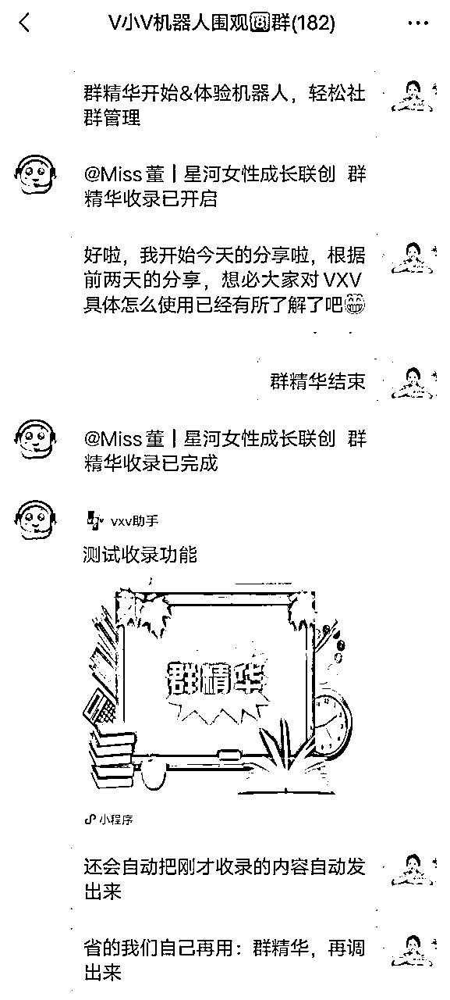

来源：https://t49loc6gg0.feishu.cn/docx/CKvWdot27oyIphxJIDeclAMknds
我是董董，一名8年北漂程序员，出于程序员的习惯，一直以来都觉得只要是重复性的事都可以用代码解决。
会想着用程序去解决这种重复无意义的事情，这样就避免我们自己去做许多重复性的工作，进而释放我们的时间和精力。
我副业一直在做自媒体，也有自己的社群，而且我也进了很多高质量的社群，发现大家在运营社群上会花费很多时间。
如：每天整理群内分享的精华内容，重复答疑等等。这些琐事都会占据我们很多时间。
观察到大家在信息管理上有这些困扰。我就在想能否用技术为大家解决这一难题？
于是，我与杨先生（我老公也是程序员）共同探讨，他深入调研并实践，我们就觉得这种重复的事情都是可以用代码实现的，最终我们共同设计了V小V机器人。
终于研发了一个产品，社群机器人，专门帮助自媒体人降本增效，将更多的内容去放到营销和生产资料上。
在小可爱的操盘下，理白和靠谱的助力下，今年2月初发起了一场群发售，售卖我的社群机器人，3天累计营收5位数。
所以将这次的发售整个过程做了个复盘，帮助大家做好自己的产品发售，都能一次发售营收5位数以上。
这篇文章从我开始考虑做发售，到结束发售的全过程的复盘，主要包含以下几个部分。
用靠谱姐的一句话就是：快闪群的功能定位是集中成交、不分裂变、部分阶段转化。也就是以前想买没下定决心的这次会买。
不清楚状况但是被气氛搞定了的会买。即使这次不买，也把草深深种进了TA心里，以及本来不认识你的人，一下子通过这次对你印象深刻。
所以快闪群最大的优势，就是通过讲故事、秀肌肉、请大咖、学员站台的方式。来促进批量转化。它能帮我实现集中批量成交的目的。
快闪群会告诉大家，我是谁？我有什么产品？我能帮你解决什么问题？我有哪些用户证言？
通过不断得重复，可以将这些东西植入到潜在客户的心智。因为只在朋友圈运营的话，存在一个触达的问题，很多人是不知道我在做这个的。
尤其是发售拉人进群的环节，白大给我怼了200个新人进群，这些新人在初期是完全不了解我的，所以打造认知就显得很有必要。
因此，群发售就相当于举着一个大喇叭，对群里所有的用户去喊话。这样，即便大家没有下单，但后面，只要她有这方面的需求，并且对你有足够的信任，就会直接来找你。
通常来说，一场发售的周期是3-5天。因为我做的是社群机器人这种服务型的工具，所以3天就足够了。
第一天是挖掘社群运营的痛点，并软植入机器人可以解决，让大家对机器人的具体功能有所期待。
第二天是讲机器人能具体解决的问题+发售。第三天用户证言+追销，找小可爱，大西，小苗哥这些已经用了一段时间机器人的大佬，来帮我站台。
金杯银杯不如别人的口碑，只有别人都说好，才能证明这个产品是真的好。
注意我们分享的时候，安排地要尽可能得连贯，维护用户的注意力和欲望。
比如：一开始我将机器人的介绍放在第一天，小可爱就说人家还没相信你，上来就推销产品不好。所以就重新改了分享稿，第一天主打社群运营的干货，培养用户信任和种草。
通常情况下每次发售少则4-5个群，多则2-30，像破局，生财这样的拉新，基本几十，上百个群都很正常的。团队的力量才是最强大的，单打独斗难成大事。在团队的加持下，才能跑的特别快。
所以一定要去招募合伙人，可以是去跟对方私聊，拉进群以后，告诉大家即将开启一场社群机器人的公开课，分销佣金是40%。
另外我还加了一条帮忙拉好友10人以上，免费送一个月的社群机器人使用时长。这样想参与的小伙伴就会多帮忙发圈裂变了。
而且当我们要去招募合伙人和大佬帮忙时，除了说好分销佣金以外，更重要的是要建立连接，有社交关系才能有进一步链接。自从做了私域，我开始意识到：人＞钱，关系在前，钱在后。
因为中国本质还是人情社会。在这之前我一直是秉着真诚交流和学习的心态，去交往各个大佬么 ，该付费的付费，该支持的支持。
所以在社群机器人发售需要人帮忙写用户证言的时候，小可爱，大西，小苗哥，柒七等等，她们二话不说帮我写了稿子，抽出自己的时间来群里帮忙分享。
确定群发售的时间，一般是3天。每个分享稿最多不要超6000字，3-5000字适合，5000字以上有点多，分享的时候稍微停顿下再继续发。
尤其是有图片，图片信息比较多的，飞书上的话是两行，在微信上已经够多了，如果飞书上是三四行，那就会有阅读压力，一定要减少、要分段。
不要想着临场发挥，想到哪说到哪，我们要打有准备的仗。以前我觉得分享稿只要做到真诚，把产品介绍出来，就会有人买，但实际上并不是的。你需要提供干货，而且要写到用户心里，达到共情的目的，才能提高转化。
无论发售几天，每天的分享稿都是需要打痛点的。因为这样用户才会觉得这个产品好，是她需要的，她一定要买。
比如：你遇到一个很好吃的零食，第一次给我说的时候，我觉得嗯应该好吃吧。第二天又给我说的时候，我会觉得这个零食好吃我有点想尝尝，第三天你又来给我说，我就觉得我一定得买回来看看到底有多好吃。
所以我们分享稿的特点也是这样，一定是每天都要去反复提，去提炼好处，能给用户解决哪些问题，这就是制造需求，把需求和场景描述出来才能让用户为它买单。
一般要注意主标题、副标题的撰写，以及三天分享的内容，要在标题处突出优势和好处，才能快速吸引到精准人群。注意这里海报的二维码要留空，方便合伙人们生成自己的群聊二维码，也能确定好每一个意向的来源。
主标题：一开始，我写的主题机器人，在小可爱的指点下，发现主标题要吸引目标人群的眼球，所以尽可能得挂上利益点，所以最终的主标题：融入了IP、必备工具这样的关键词。
次标题：要尽可能的给出利益点，因为字号偏小，所以文案可以稍微长点。
时间：开头加上这次发售的时间，比较醒目，能让人知道你具体分享的时间点，感兴趣的小伙伴就会在那几天留出时间去看你的分享。
个人背书：主要是秀肌肉，把自己所在的赛道放在第一行，这样别人就能知道你是做什么的。
分享内容：具体的分享主题，一定要吸引别人，而且要有干货，这样才能吸引别人进群。
福利这一块，一定要有足够的吸引力，而且要和意向用户相匹配。会对社群机器人感兴趣的，都是对社群运营感兴趣的，所以我们的进群福利是《社群运营SOP》。事实证明加微信的效果很好，总计添加微信500+，流量也很精准。
同时也要设置裂变福利，这样就能吸引大家不断邀请自己圈内好友。
还有群内报名的福利，这样能促进发售。
这一块的文案不仅包含朋友圈裂变文案，还有进群领福利的文案等等。发售期间，不同阶段，都有对应的不同类型的文案，甚至还需要实时更新。
这些文案都可以提前整理好放到飞书或者flomo上，到时需要的时候，直接发送就比较方便，而且也便于沉淀，留下次做发售使用。
像朋友圈文案：主要是挖掘痛点，以及产品卖点，这样能吸引到具体的意向用户。
这里要注意的就是咱们人员怎么筛选？①尽量从学员中去找，②如果不是自己的学员，要去找足够信赖的、靠谱的。
千万别突然找平时交集比较少、不够了解的人，这样在发售期间可能会不好麻烦大家帮忙。所以一定要找自己了解的，靠谱的熟人，这种确定性比较高，这样你就能更专心得去做分享和转化本身。
当我们准备充足以后，就可以开始拉人进群了。这里一定要提前准备好3-5个群，并且要用小号去做群主，以免被风控。
一般在一开始进人的时候，我们可以每隔10-20分钟，发一次入群欢迎语，引导用户加微信。中后期人很少的时候，以及半夜的时候，我就会用机器人小助理发送入群欢迎语，这样就不用自己实时关注进群情况了。
当对方加我领福利以后，要引导对方群内回复领到了福利。比如：我已经领取价值699的社群运营sop资料，谢谢董董。
这样就能引导更多人来添加我微信领取福利。还能增加群内氛围，作为发圈素材。
这里要注意的是一定要在引导对方加微信的时候，一开始我并没有推送名片，都是大家自己去群公告或者欢迎语里去加。到后面正式分享的时候，才想起来用推送名片的方式。
干货分享的白天，只需要做好3件事：
一开始我觉得只要真诚分享，告诉大家机器人的功能以及使用方法，那感兴趣的人自然会来加你。后来小可爱说，进群的大部分人对你是不了解的，不能一进群分享产品，一定是要先给干货才能减少大家的抵触。
干货分享的环节，我给大家分享下经验：
分享的时候，有个小技巧：虽然我用了机器人助理帮我转发，我还是把分享的所有群聊都置顶了，选了一个主要分享的群独立窗口显示，每发完一句话，就看机器人是否转发到另外的6个群。
当看到另外6个群已经发完了，我再分享下一句话，这样的分享节奏就不会很快。分享的时候不要图快，稳比快重要。
如果没有机器人，自己手动转发的话，那我们可以在1个群发完，选中消息——转发-多选-选择另外几个个群（一定要逐个逐个点，数下群数量对不对）。
正常我们每天的分享是需要自己手动整理打包的，这样能方便大家爬楼。由于我机器人可以自动收录分享的内容，所以就不用请课代表整理内容了，只要开始分享的时候发送指令，就会自动收录，等结束的时候再调用指令就可以了。

而且当有人在正式发售期间进群，也不用让人把之前的分享合集打包发给新进群的小伙伴，可以直接调用群精华指令，就能把之前的分享发出来就很方便。
答疑环节
每天分享结束，我们都会留一个答疑环节，鼓励大家主动提问题。在我们回复问题，解答大家的疑问时，就能看出我们的硬实力。
也可以每个群安排一个管理员，帮忙看群，有任何一点舆论信息要及时给出反应，用最快的速度处理，避免影响到更多其他的成员。
在答疑环节展示个人实力，去展示产品的价值，为营销铺好路，营销的本质也在于：让更多人有机会看到你的真正实力、看到你的产品是能帮助他们解决问题的。
这个是在第二天分享结束，不能一开始第一天就来推产品，要先培养信任，再慢慢过渡到发售。
这里和大家分享的发售经验是：
我原本以为发售很简单，只要把人拉到群里，开始宣发下产品就可以了。但其实有很多细节要做。因为群发售的节奏很重要，任意一个环节以及对应话术都需要提前准备到位。
如果没有做足规划，就会导致出现很多意外。尤其是我一开始没有想到付款截图发群里，这一块遗漏的话，对于发售来说是很致命的。
一开始进群的时候，我并没有让主持人推送我的微信名片，只是引导大家去看群公告，去搜我的微信号。这样对于用户来说其实增加了步骤。
后来小可爱就说你要多引导用户加你，并且以推送名片的方式。这样大家加你就会方便很多。我们要时刻站在用户的角度去思考。什么方式可以减少不必要的麻烦，哪怕一个麻烦看起来很小，都会影响用户最终的决策。
想要获取更多的资源，一定是要加入一个优质的圈子，并且多在圈子做价值，才能产生进一步合作的可能。
就像我这次做社群机器人的发售，如果是我自己搞，要流量没流量，要人脉没人脉，可能翻不出什么水花。但是进对圈子，成为靠谱和理白的合伙人，就有了资源。白大和靠谱姐直接给我灌了1个群。还帮我把握3天的分享稿内容，所以我这次发售的分享很顺利。
独木难支，我是执行力靠前，只会做事。战略思维只有学习，所以要想做成一件事，一定是需要有战略思维的人帮我统筹的，我去做好落实好。
所以我找了小可爱来帮我做操盘，她帮我统筹好发售的整体流程，还给我分析每天发售的流程和细节，这样整体的发售非常有节奏，乱中有序。